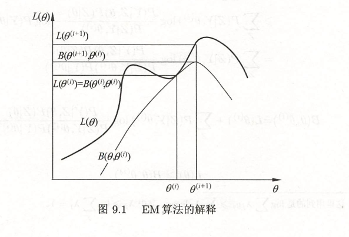
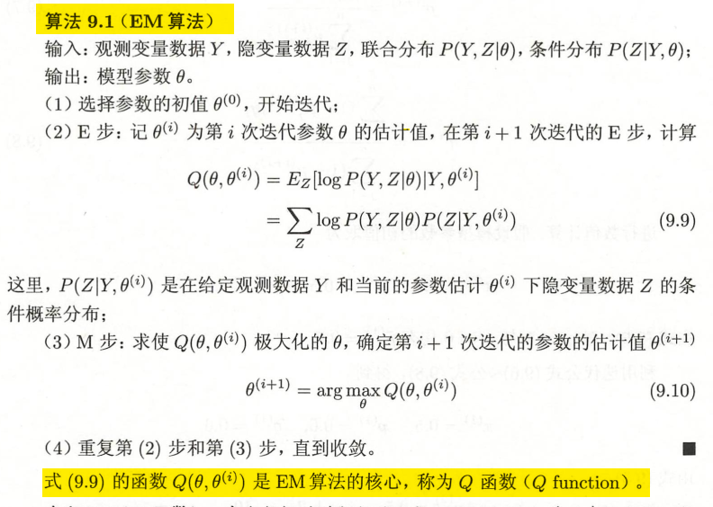

EM算法及其推广
EM算法
对于一般概率模型的学习策略，我们往往会采取极大似然估计或者贝叶斯估计的方法对模型的参数进行估计，但是需要注意的是这种估计方法都是建立在待估参数全部为已经知道结果的参数（观测变量）的基础之上的。当模型中有隐变量/潜在变量（数据不可观测的变量）时，往往会给极大化似然函数带来困难（隐变量可能会使得似然很难胡包含有和或者积分的对数，难以利用传统的方法求得解析解）。
面对上述问题我们很自然的一种想法是通过迭代算法来求解近似最大值，而EM算法正是在针对这个问题的求解过程中导出的一种来近似求解的对数似然函数极大化问题的算法。EM算法主要分为两步：
- E：求期望(expectation)
- M:求极大(maximization)
算法导出
针对一个含有隐变量的概率模型，这里假设隐变量为Z，观测数据Y关于参数$\theta$的对数似然函数为$L(\theta)$:
迭代主要是迭代待估参数$\theta$的值，记第i次迭代后的估计值为$\theta^{(i)}$:
欲求使得似然函数增加的参数估计值，需要将上述放缩后的函数最大化，抛去无关常数，则问题转化为：
EM算法就是通过不断求解下界的极大化逼近求解对数似然函数极大化的算法

$B(\theta,\theta^{(i)})$即我们求得的真实下界

算法收敛性
可以证明随着迭代次数的增加，似然函数的值会不断增大，这也意味着如果似然函数有界，那么一定存在局部最优解或者全局最优解。
在高斯混合模型学习中的应用
高斯混合模型

EM算法的推广
本博客所有文章除特别声明外，均采用 CC BY-NC-SA 4.0 许可协议。转载请注明来自 小明的博客！
相关推荐


评论